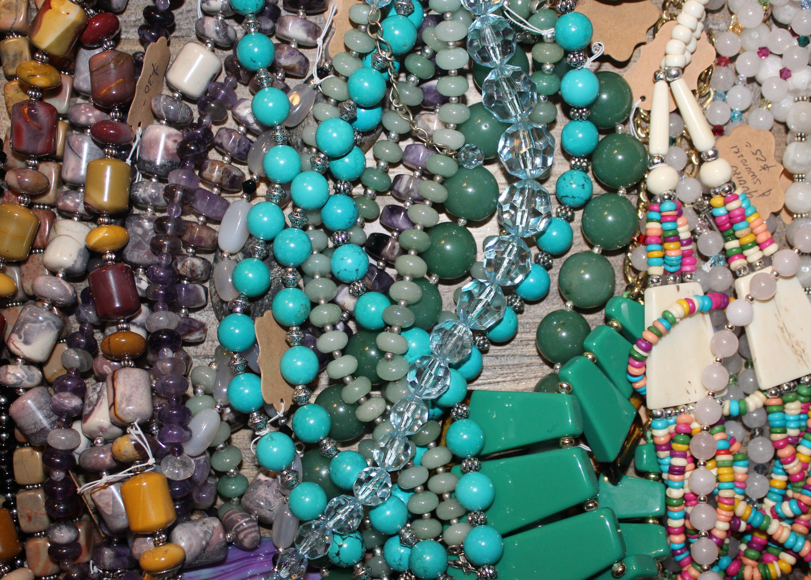
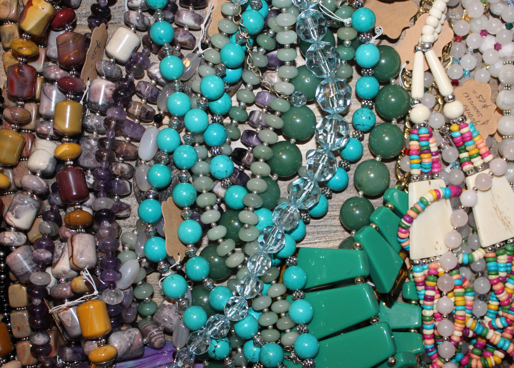

All Handmade.
The process of making jewelry is an easy task. I first look for the trending styles to get inspired. Afterwhich, good quality stones are bought for the necklace in mind. I like to see them by myself to look for good quality stones. After buying the stones, I look for sterling silver beads, sterling silver claps, wire, and pendants. When the stones are round and big, about 10mm, I only insert a small sterling silver bead to them. They look classy and elegant by themselves.
I test the necklace to check if the length looks nice. However, if the stones are small, I prefer to make layered necklaces or add a pendant or pendants. I mix and match stones based on size, color, and shape. The combinations, colors, designs are endless but always focus on elegance.
 
